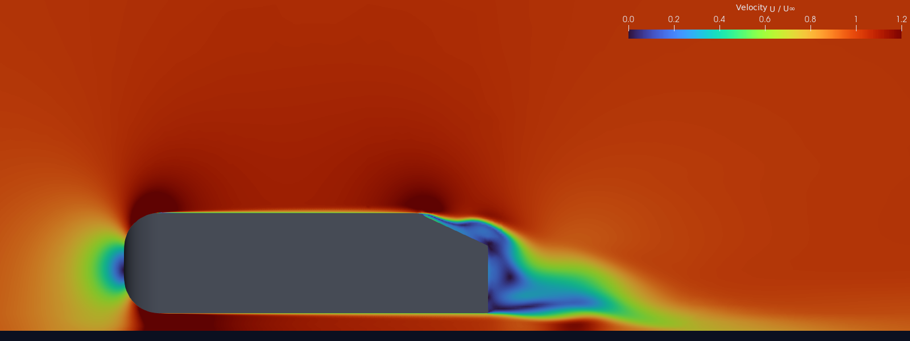
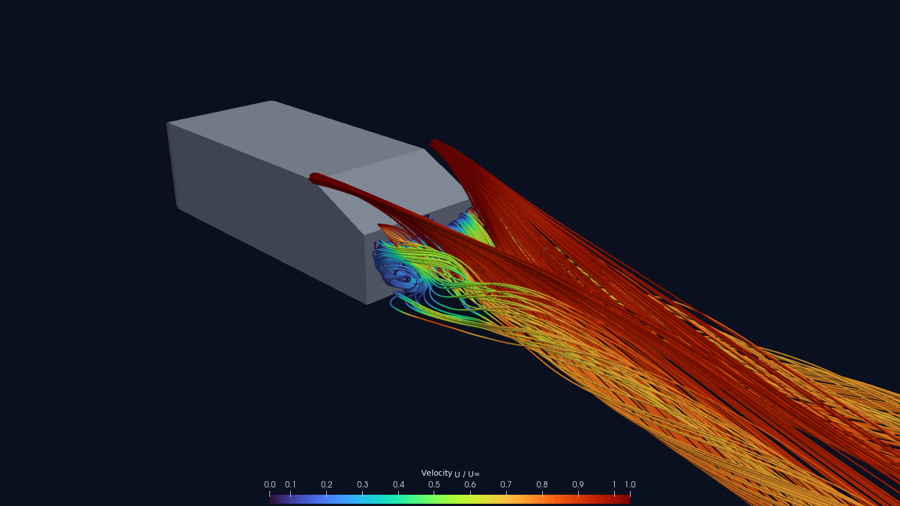
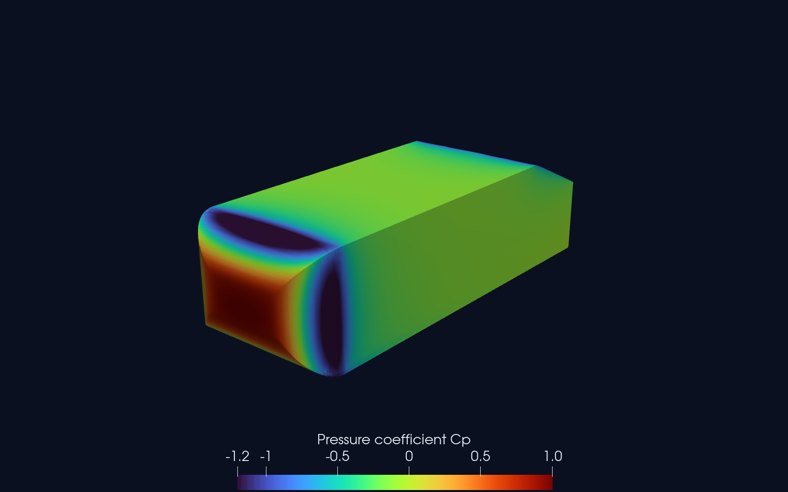
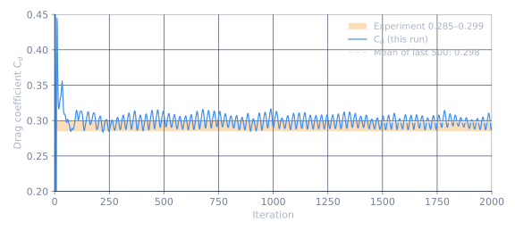
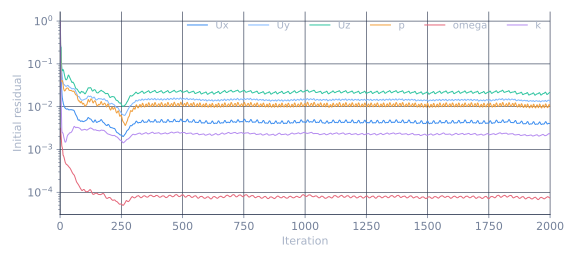

Ahmed Body Validation
The Ahmed body is the standard test shape for automotive CFD: a simplified car with a rounded nose and a slanted rear. Its wake is very sensitive to the slant angle, which makes it a tough check on turbulence modelling. I'm using it to validate my OpenFOAM workflow before trusting it on real vehicles.
In progress · drag validatedSurface pressure
Pressure coefficient Cp = p / (½ρU²) on the body, from the final iteration. The nose is the stagnation point (Cp ≈ 1). The air speeds up around the curved nose edges, which gives strong suction there (deep blue), and again at the top of the slant. Only half the body was simulated; it is mirrored here.
Interactive streamlines
Streamlines traced live in your browser from the CFD velocity field. Pick a preset or move the orange seed rake with the sliders; every change re-traces the lines.
How it works: the final-iteration velocity field was sampled onto a 10 mm grid around the body and wake (530 k points, 3 MB) with ParaView. The browser integrates each line with 4th-order Runge–Kutta through that grid, so lines stop at the body and at the edge of the sampled box. Colour is local speed |U|/U∞; with Animate flow on, the pulses travel at the local flow speed. Coordinates: nose at x = 0, base at x = 1.044 m, ground at z = 0, symmetry plane y = 0.
The flow



Convergence
Drag coefficient vs iteration
Reaches the measured range (orange band) within about 200 iterations, then oscillates around it

Solver residuals
Drop 2–3 orders of magnitude, then level off as the steady solver tracks the unsteady wake

The wake behind a bluff body is genuinely unsteady, so a steady solver never fully converges; it oscillates about the mean. That's why Cd is averaged over the last 500 iterations (it varies between 0.287 and 0.314 in that window).
Setup
| Body | 1044 × 389 × 288 mm, 100 mm nose radius, 222 mm slant at 25° |
| Ground clearance | 50 mm (support stilts left out, as is common) |
| Flow speed | 40 m/s → ReL ≈ 2.8 × 10⁶ |
| Domain | Half model with symmetry plane; ~3 L upstream, ~6 L downstream; 2.5 % blockage |
| Mesh | snappyHexMesh, 1.54 M cells, 5 prism layers, 3.1–1.6 mm cells on the body and its edges |
| Wall treatment | Wall functions, mean y+ ≈ 32 on the body |
| Solver | simpleFoam (steady RANS), k-ω SST, SIMPLEC, linearUpwind for U |
| Boundaries | Moving ground at 40 m/s, slip top and side walls, zero-pressure outlet |
| Run | 2000 iterations on 4 cores, about 70 minutes |
Validation
| Quantity | Experiment | My CFD | Result |
|---|---|---|---|
| Drag coefficient Cd | 0.285–0.299 | 0.298 | Within range |
| Slant-surface pressure | — | — | Next |
| Wake velocity profiles | — | — | Next |
References: Ahmed, Ramm & Faltin (1984), SAE 840300; Lienhart & Becker (2003), SAE 2003-01-0656, and the ERCOFTAC wake measurements.
A matching total Cd doesn't guarantee the split between slant and base drag is right. Steady RANS is known to struggle with the partly separated 25° slant, so the next step is to compare slant pressures and wake profiles against the ERCOFTAC data.